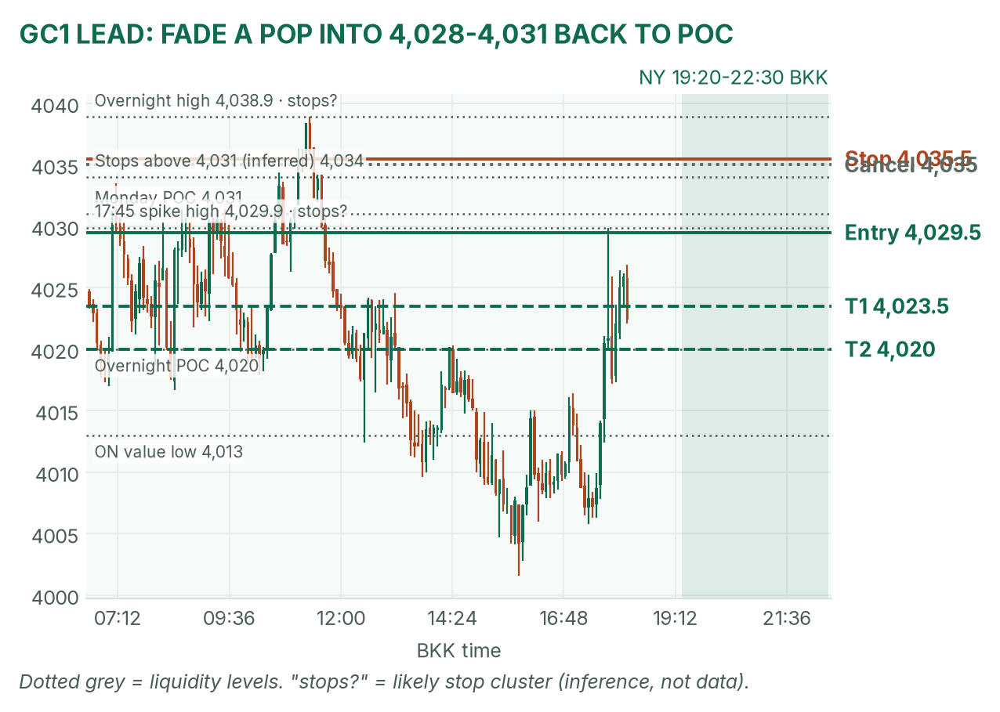
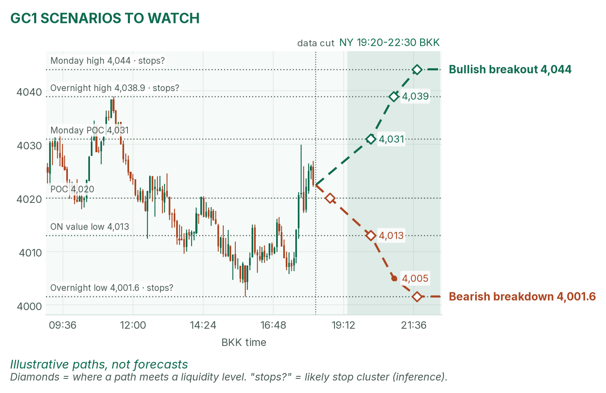
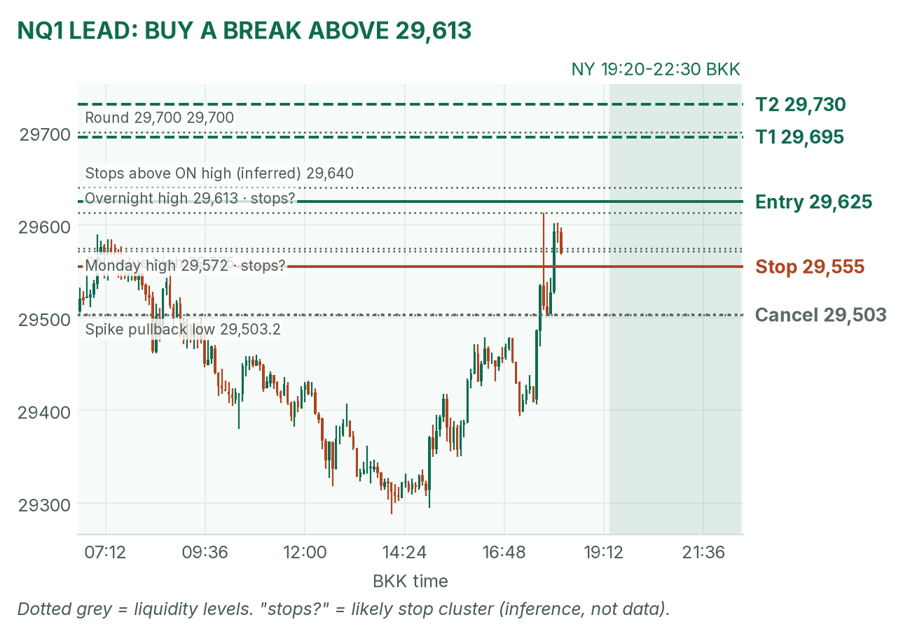
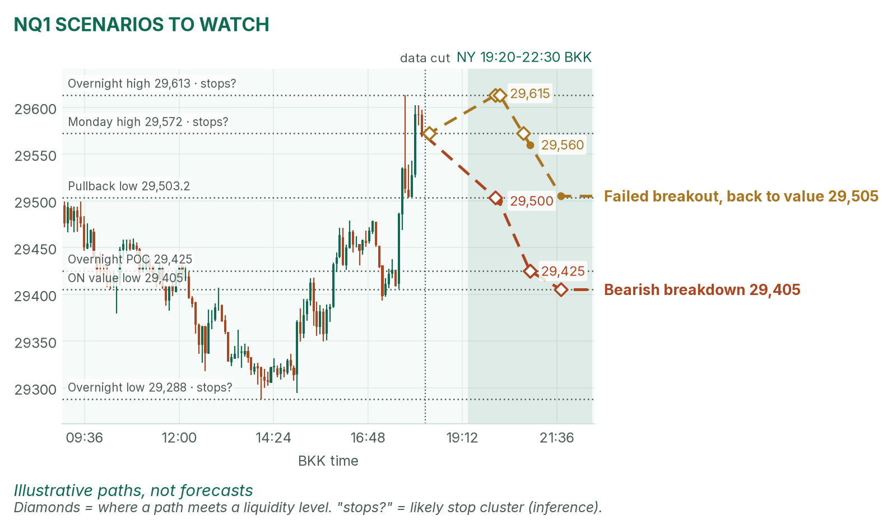

A sudden jolt before New York. Nasdaq presses its overnight high; gold bounced back to its busiest price.
Window 19:20–22:30 BKK (US clocks change Nov 1). Data cut 18:15 BKK: GC 4,022.4, NQ 29,569.5 (TopstepX Z26, last complete 5m bar). Levels only. Ideas, not advice.
Summary
GC: fade a failed pop into 4,028–4,031. Stop 4,035.5, target 4,020, the overnight POC (1.6R). About 40%.
NQ: buy a 5m close above 29,613, the overnight high. Stop 29,555, target 29,730 (1.5R). About 37%.
Two US releases inside the window. No entries 19:25–19:32 or 20:55–21:02.
Flat by 22:30, no matter what.
The market story
Asia was heavy: gold slid to 4,001.6 and Nasdaq futures to 29,288. Then at 17:35 BKK all three contracts jumped together. I found no confirmed headline for it.
The rates backdrop hasn't changed. Interest rates are the price of borrowing money, and the 10-year US yield sat at 4.968% this morning (April). Gold pays no interest, so high rates make holding it costlier. The Fed meets today and decides early Thursday BKK; a hold is about 90% priced (April).
How I read it: Nasdaq has momentum, gold has only a bounce inside a downtrend. I buy Nasdaq strength and sell gold pops.
News (BKK)
Time
Event
Forecast
Prior
Read
19:30
Durable goods orders, Sep (orders for machines, planes and other long-lasting goods)
+1.5%
0.0%
Hot lifts yields, weighing on gold and NQ; cold, the reverse.
21:00
Consumer confidence, Oct
80.5–80.9
81.9
A cold confidence print helps gold via lower yields; hot does the opposite.
21:00
New home sales, Sep
650k
684k
No-trade zones: 19:25–19:32 and 20:55–21:02. No Fed speakers (meeting under way). Israel's exit polls land at 03:00, after the window.
Levels to watch
Level
GC
NQ
Monday high / low
4,044.0 / 3,990.9
29,572 / 29,024.25
Overnight high
4,038.9
29,613
Overnight value area (where 70% of volume traded)
4,013–4,030
29,405–29,575
Overnight POC
4,020
29,425
Monday POC
4,031
29,495
Overnight low
4,001.6
29,288
Typical window range (median / 80th pct, 20 days)
39 / 60 pts
327 / 413 pts
Gold (GC1)
Bias: bearish on the bigger picture, neutral today. It keeps failing under Monday's POC. My NY gold rule takes the COMEX opening range from 19:20 and fades its edges back to the POC.
The trade: fade a failed pop
Entry
4,028–4,031 (plan 4,029.5): a pop that closes back below it on 5 minutes, after the COMEX range sets and after 19:32
Stop
4,035.5: above Monday's POC (4,031) and the overnight value high, where buy stops likely sit (inference)
Targets
1R partial 4,023.5 · full target 4,020, the overnight POC (1.6R)
Cancel
A 5m close above 4,035 before entry, or price trades 4,020 first
Probability
~40%, an estimate. Basis: NY gold opening ranges mostly failed in my Aug–Oct study (not significant); the stop is about 1.1 five-minute ATRs (average bar size, 5.3 pts), so durable-goods noise can tag it.
Why: sell where the spike ran out, with the downtrend. No pop, no trade. I won't short 4,022 in the middle. April agrees: she says gold must retake 4,038.9 to turn positive. VWAP (volume-weighted average price) is a filter only after 19:50.

GC 5m bars to 18:15 BKK, window shaded. The 17:35 spike stalled at 4,029.9, just under Monday's POC.

Illustrative paths, not forecasts: the other two setups at liquidity levels (prices where resting orders likely cluster).
Scenarios to watch
Bullish breakout: two 5m closes above 4,031. Aims for 4,038.9 (overnight high), then 4,044.
Bearish breakdown: a 15m close below 4,013 (value low). Aims for 4,005, then 4,001.6 and the round 4,000.
Nasdaq (NQ1)
Bias: bullish. The overnight low held and the spike cleared Monday's high. My NQ rule trades breaks of the fixed 5-minute range after the 20:30 stock open.
The trade: bullish breakout
Entry
29,625 on a 5m close above 29,613 (overnight high) and the 20:30–20:35 range high
Stop
29,555: back under Monday's high (29,572) and the value high (29,575)
Targets
1R partial 29,695 · full target 29,730, top of a typical window (1.5R)
Cancel
NQ trades 29,503 (the spike's pullback low) before entry, or no break by 22:00
Probability
~37%, an estimate. Basis: NQ 5-minute range breakouts averaged +0.37R in my study (31 sessions, not significant); 105 points to target is about a third of a typical window.
Why: buy stops likely sit above the overnight high (an inference), and a break there can run. April agrees: she named 29,589.50 as the level that shows buyers are back,. Microsoft and Alphabet report Wednesday; if it fails fast, I don't re-enter.

NQ 5m bars to 18:15 BKK, window shaded. The trigger sits just over the spike high.

Illustrative paths, not forecasts: breakdown and failed breakout.
Scenarios to watch
Bearish breakdown: a 5m close under 29,503 and the opening range low. Aims for 29,425 (POC), then 29,405.
Failed breakout: a poke above 29,613 that closes back under 29,572 within 15 minutes. Aims for 29,505.
6E (not traded in NY): 1.11695, just off the day's low of 1.1157. London's short hit its target.
Before you click
ORB bases. GC NY: COMEX 19:20 range, ends at the first candle under half the average volume of the first two, fade to POC. NQ: fixed 5-minute range after 20:30, trade breakouts.
Checklist. 1) Room to today's max loss? 2) Within daily rules? 3) No release within 30 minutes? 4) Agrees with the bias? 5) At a marked level? 6) Setup tagged? 7) Entry, stop, 1R partial, target set? 8) Calm, not chasing?
Reset (60 seconds). Breathe in 4, hold 4, out 6, five times. Name the feeling in one word. "Eager"? Wait 5 minutes.
TopstepX Z26 bars, read-only; overnight starts 05:00 BKK. Macro: April's pre-London brief (no pre-NY brief yet). Durable goods and home sales: for-ex.news, Makkler, Briefing.com. Confidence: April.